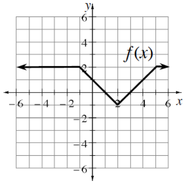

Sketch a graph \(f(x)=-(x-4)^2(x+5)\). State the degree of the polynomial and the end behavior of the function.
QUADRATIC FUNCTIONS
Let \(f(x)=3x^2-15\). What are the roots of this quadratic function? Give exact answers.
Let \(g(x)=x^2+6x+7\). What are the roots of this quadratic function? Give exact answers.
Let \(h(x)=2(x-7)^2-6\). What are the roots of this quadratic function? Give exact answers.
The graph of a quadratic function crosses the \(x\)-axis at \(x=8-\sqrt{11}\). Write a possible equation for this function.
Recall that not all equations have real solutions. Sometimes the solutions to equations are complex numbers. Use the Quadratic Formula to solve the following equation. Hint: \(i^2=-1\)
\(−13=x^2-4x\)
Given \(f(x)=2x+5\), \(g(x)=x^2-1\), and \(h(x)=\sqrt{x+2}\).
Evaluate \(g(f(h(2)))\).
Write an equation for \(f(g(h(x)))\).
Write an equation for \(g(f(x))\).
For what value(s) of \(x\) will \(g(f(x))=48\)?
Consider the area under the curve of \(f\left(x\right)=\sqrt{x^2+2}\) on the interval \(3\le x\le5\).
Write out the sums you would need to determine the right endpoint and left endpoint rectangle approximations for the area under the curve using four rectangles. Do not evaluate the sums. Leave the expressions in expanded form.
Express each of the sums using sigma notation. You should be able to express the different sums by just changing the indices of each summation.
Explain how the indices relate to right endpoint and left endpoint rectangles.
Evaluate each expression. Give exact values.
\(\tan\left(\frac{2\pi}{3}\right)\)
\(\sin\left(\frac{5\pi}{4}\right)\)
\(\cos\left(\frac{11\pi}{6}\right)\)
\(\tan\left(\frac{4\pi}{3}\right)\)
Rewrite each of the following expressions as a single reduced fraction.
\(\frac { \frac { 1 } { 2 } } { \frac { \sqrt { 3 } } { 2 } }\)
\(\left(\frac{1}{x}-x\right)\left(\frac{1}{x+1}-1\right)\)
The manufacturing company you work for has been hired to produce a \(100\) cubic foot box. It must have a square base and no top. The material for the base costs \(\$3\) per square foot and the material for the sides costs \(\$1\) per square foot. Complete the parts shown to determine the minimum cost of producing the box.
Sketch a diagram of this situation.
Write an expression for the cost of the base in terms of \(x\).
Express the cost of the sides in terms of \(x\) and \(h\), the height of the box.
Express the total cost of the box in terms of \(x\) and \(h\).
Use the fact that the volume of the box is \(100\) cubic feet to write an equation for the volume of the box.
Solve for h in your equation from part (e) and then express the cost only in terms of \(x\).
Graph your equation from part (f) to determine value of \(x\) that gives the minimum cost. What is the minimum cost?
Consider the polynomial function \(p(x)=(x-3)^2(x+1)\).
Sketch a graph of the function.
Now consider \(q(x)=3(x-3)^2(x+1)\). How will the graph of \(y=q(x)\) be different from the graph of \(y=p(x)\)?
Do the graphs of \(y=p(x)\) and \(y=q(x)\) have any of the same points? Explain.
Consider the quadratic equation \(x^2-10x+29=0\).
Is \(x=5+2i\) a solution to the equation? How can you be sure without solving?
Without solving, predict another solution to the equation. Verify your prediction by checking it.
Where does the parabola \(y=x^2-10x+29\) intersect the \(x\)-axis? Explain.
Write each sum in expanded form and calculate its value.
\(\displaystyle \sum _ { n = 1 } ^ { 4 } n ^ { 2 }\)
\(\displaystyle \sum _ { j = 2 } ^ { 6 } ( 6 j - j ^ { 2 } )\)
\(\displaystyle \sum _ { i = 3 } ^ { 6 } 3 ^ { i }\)
Solve: \(\sqrt{c+1}=5-c\)
Using the graph of \(y=f(x)\) shown, describe the transformation and sketch a graph of the transformed function.
\(y=f(x+2)+1\)
\(y=2f(x)+2\)
\(y=-f(x+4)\)

Solve the system: \(\begin{aligned}[t] x^2+y^2=25 \\ xy=12 \end{aligned}\)
Graph each of the following trigonometric functions. Describe the transformation.
\(y=2\sin\left(x-\frac{\pi}{4}\right)+1\)
\(y=-3\cos(2x)-2\)
\(y=3-\sin(x)\)
Factor.
\(25-49x^2\)
\(x^4y^2+xy^5\)
\((x-1)^{7/2}-(x-1)^{3/2}\)